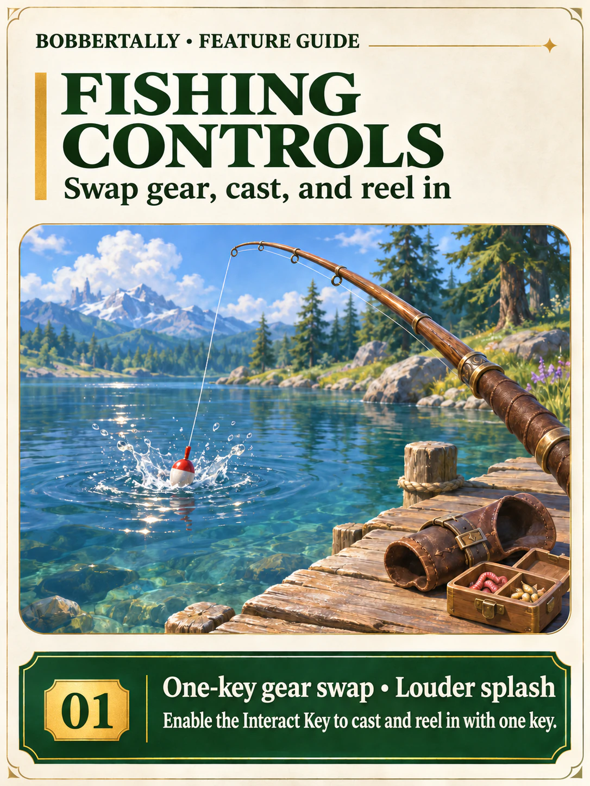
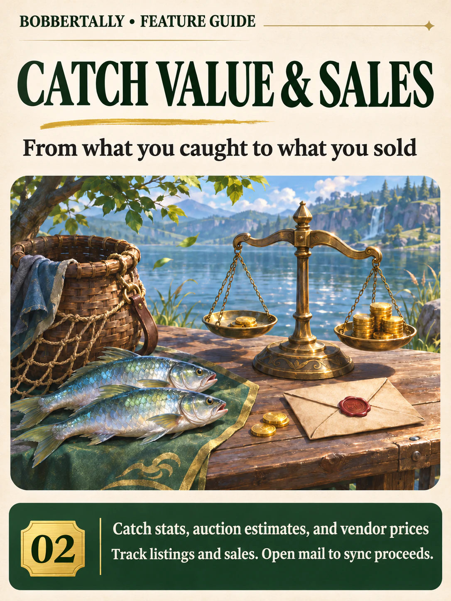
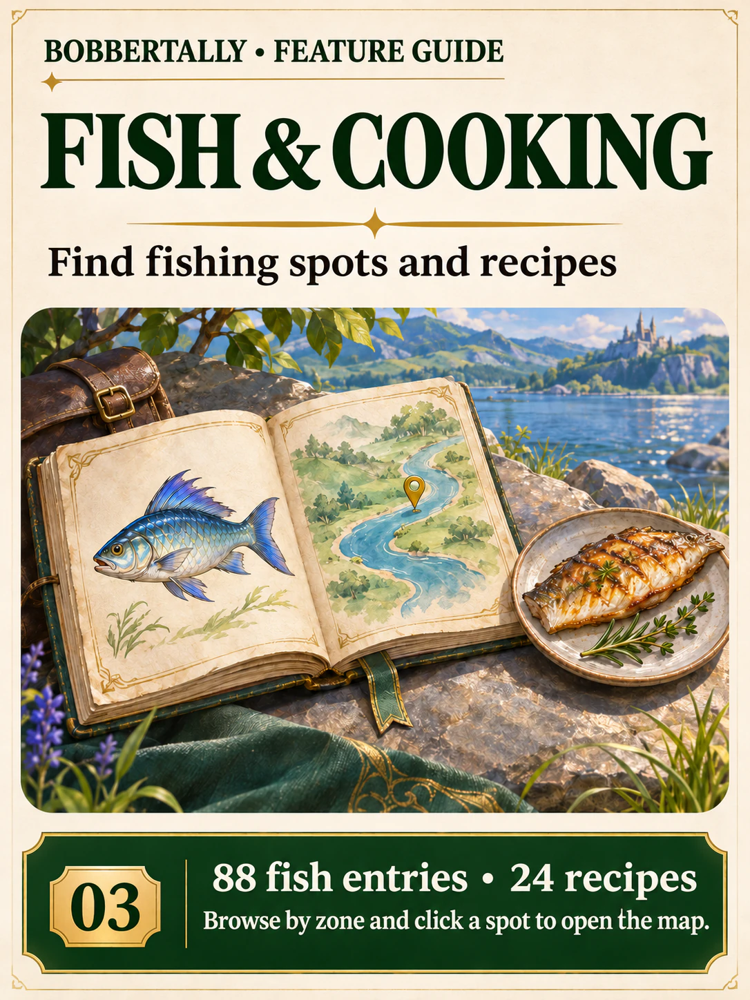

I finally got the hang of fishing in WoW: Forever
Hear a splash? Press the key again.
When I got flustered, I used to double-check whether I’d even equipped my fishing pole. With BobberTally, I swap gear with one key and use the same key to cast and reel in. Even when I’ve zoned out, the splash tells me it’s time to do something.

One look at the listing price and I’m shopping for a mount
After fishing, I check Auction House listings and vendor prices before deciding where to sell. The listing price looks great, but I check my mail to see what I actually got. I can make the call at a glance now and squeeze in two more casts.

I went looking for a fishing spot and planned dinner along the way
I open the fish catalog to see what bites nearby, then click a spot to open the map. A few clicks later I’m looking at cooking recipes: oh, you can grill this one. A minute ago I was counting the gold. Now I just want to keep one for dinner.
